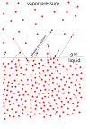

vapor_pressure

Definition: Vapor pressure (or vapour pressure in English-speaking countries other than the US; see spelling differences and equilibrium vapor pressure) is defined as the pressure exerted by a vapor in thermodynamic equilibrium with its condensed phases (solid or liquid) at a given temperature in a closed system. The equilibrium vapor pressure is an indication of a liquid's thermodynamic tendency to evaporate. It relates to the balance of particles escaping from the liquid (or solid) in equilibrium with those in a coexisting vapor phase. A substance with a high vapor pressure at normal temperatures is often referred to as volatile. The pressure exhibited by vapor present above a liquid surface is known as vapor pressure. As the temperature of a liquid increases, the attractive interactions between liquid molecules become less significant in comparison to the entropy of those molecules in the gas phase, increasing the vapor pressure. Thus, liquids with strong intermolecular interactions are likely to have smaller vapor pressures, with the reverse true for weaker interactions.
Source: Wikipedia
Wikipedia Page
Wikidata Page